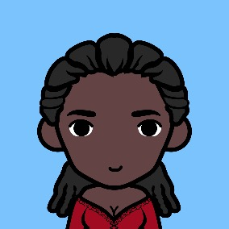
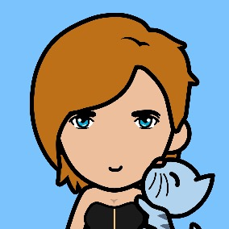

Tobias van der Linden
Age49
Pronounshe/him
SchoolPrinceton
ProfessionIntelligence specialist at Department of Defense
Fitness fanatic - just finished my seventh marathon of the year, next stop: Cape Town!
A gardener gardened a puzzle of math,
'Pon squares, a Slanted hedgerow he grew.
All looking for love, exploring a path,
Were thirty-six guests, on every path two.
With step after step, they moved t'ward each other
Until they would meet on the black tiles below.
Now, one might've walked one step more than the other,
Perhaps they kept score with their newly-met beau.
The women then named for us bets matrimonial,
Their union they wished to the whole world declare;
The men named a veiled degree-ten polynomial,
And argued their values when joined as a pair.
To check that your counting of points is all clean,
A sum of them by the eight letters will clue,
First twenty-six, hundred sixteen, then thirteen,
Then forty-one, sixteen, and thirty-nine too.
With twenty-and-two as your second-last checksum,
There's zero to finish; one last step in store.
Now mod thirty-one for each pairs' final outcome,
Discover the Rose who's the true paramour.
 |
 |
 |
 |  |
 |
 |
||||||||||||||
 |
 |
 |
||||||||||||||||||
| 1 | ||||||||||||||||||||
 |
||||||||||||||||||||
 |
|
 |
 |
|||||||||||||||||
| 1 | 2 | 2 | ||||||||||||||||||
 |
|
|
||||||||||||||||||
| 4 | 1 | |||||||||||||||||||
|
|
|||||||||||||||||||
| 2 | 1 | |||||||||||||||||||
|  | |
 |
||||||||||||||||||
| 2 | ||||||||||||||||||||
|
 |
|||||||||||||||||||
| 1 | 1 | 2 | 2 | |||||||||||||||||
|
|
 |
||||||||||||||||||
| 1 | ||||||||||||||||||||
 |
|
|
 |
|||||||||||||||||
 |
 |
 |
Tobias van der Linden
Age49
Pronounshe/him
SchoolPrinceton
ProfessionIntelligence specialist at Department of Defense
Fitness fanatic - just finished my seventh marathon of the year, next stop: Cape Town!
Sara Knight
Age22
Pronounsshe/her
SchoolAmherst
ProfessionProfessional cosplayer
Ghibli vs. Disney, manga vs comics, Sailor Moon vs. Super Hero Girls -- let's debate!
Billy Hwang
Age25
Pronounshe/him
SchoolWilliams
ProfessionMusician
I'm doing some REAL music with my buddies. Just you wait, we're going to be the best grunge band since Pearl Jam. Date me now before you'll have to pay to see me.
Mayumi Higashi
Age31
Pronounsshe/her
SchoolGeorgetown
ProfessionChef on "Mayumi's Kitchen"
You've probably seen me on TV and know who I am already, so I might as well use this space here to promote my new restaruant in Nantucket. Hope to see you there!
Titilayo Okusanya
Age31
Pronounsshe/her
SchoolOxford
ProfessionCongresswoman, Heartford's 3rd district at Congress of Bookspace
For years I've represented the interests of all types of relationships at the Congress, from crushes to long-distance relationships, from elopement to open relationships, I think it's time to represent my own interest here!
Rajesh Agarwal
Age25
Pronounshe/him
SchoolOxford
ProfessionAspiring Bollywood actor
Just another Raj looking for his Simran...
Avenira Batrachenko
Age38
Pronounsshe/her
SchoolMIT
ProfessionPhotographer
I used to shoot air rifle (and I have an Olympic medal to prove it) and now I shoot pictures. "Shoot me" would be a very bad joke to make around me.
Charles Cosway
Age31
Pronounshe/him
SchoolCambridge
ProfessionPainter
The most surprising thing about me is… probably that I'm directly related to Thomas Jefferson (he and my nth-great-grandma had a fling when he was in France, you go gram!). Sadly I still get no special treatment at the border.
Serena Lopez
Age25
Pronounsshe/her
SchoolDuke
ProfessionKnicks City Dancer
My guilty pleasure is Oprah, what's yours?
Jada Brooks
Age49
Pronounsshe/her
SchoolMiddlebury (BA), Harvard (JD)
ProfessionJudge
I won't date you if you didn't like Law and Order. Yes I'm judgmental, that's my job.
Christoph von Bausch
Age56
Pronounshe/him
SchoolCambridge
ProfessionIndependent consultant
My friend tells me I look like George Clooney, but I think I'm more of a Steve Martin. Help us settle the debate!
Jennifer Zhang
Age24
Pronounsshe/her
SchoolCornell
ProfessionSoftware engineer at Blackstone
Fun fact: Chinese Jews do exist and I'm one of them — in fact I just came back from my birthright trip to Israel. Proud of both my Chinese and Jewish heritages!
Katherine Campbell
Age36
Pronounsshe/her
SchoolMIT (BS, PhD)
ProfessionSupreme leader at CERN
I lead a team of researchers studying antimatter, entanglement, quark interaction, spacetime symmetry... In short, we're trying to discover the truth about our universe. Look elsewhere if you can't appreciate how important that is.
Hans Schneider
Age27
Pronounshe/him
SchoolUPenn
ProfessionRetired
I'm living the ERE life -- I hunt for food and make my own clothes. Hoping to find someone who shares same values. Bonus point if you are also good at cutting hair.
King Gregory IV of Heartford
Age35
Pronounshe/him
SchoolHarvard
ProfessionMonarch at Heartford Palace
You'll know I like you if... I let you drop "Your Majesty" on our first date.
Colleen Einstein
Age37
Pronounsshe/her
SchoolHarvard
ProfessionSVP at Ralph Lauren
Yes I'm the great-grand-daughter of THAT Einstein. No I do not want to read your physics dissertation.
Ruth Choi
Age27
Pronounsshe/her
SchoolYale
ProfessionFreelance Writer
Working on my autobiographical first novel "Kimchilled", on how my parents -- both doctors -- came to accept that I was not going to medical school.
Marco Garcia
Age24
Pronounshe/him
SchoolYale
ProfessionFounder at CrazySusan Inc.
A big shout-out to my ex, Susan, for being the inspiration to my new startup! Excuse me if I reply late because I have to go to all these very important investor meetings in the Vatican, Zurich, London, Berlin...
Scott Lowery
Age53
Pronounshe/him
SchoolBoston University (BS), Duke (MD)
ProfessionSurgeon
I've studied thousands of hearts in my career, yet the one I really want to get to know is that of yours.
Melissa Kaufman
Age62
Pronounsshe/her
SchoolCurtis Institute of Music
ProfessionConcert pianist
I try to combine my love for nature and music in my work, my next album will be called "Roots of Accord", and all proceeds will be donated to the rainforest conservation efforts.
Denver Benitez
Age24
Pronounshe/him
SchoolDartmouth
Professionn/a
Bought Bitcoin back in 2012 and now I spend all my time chilling and scuba diving in Bermuda. Looking for that special someone to hodl.
Tina Harrington
Age24
Pronounsshe/her
SchoolVanderbilt
ProfessionSwimsuit model
Click here to check out my Instagram for more photos!
Frederick Zimmerman
Age25
Pronounshe/him
SchoolUNC
ProfessionInvestment banker
I'm an open book, just ask. ;)
Junia Galanis
Age24
Pronounsshe/her
SchoolPomona
ProfessionVolunteer Coordinator at Heartford Has Heart
I work with low-income families and children and I can't wait until the day my job is no longer needed. Looking for someone who is kind and compassionate.
Brandon Meyer
Age29
Pronounshe/him
SchoolUVA
ProfessionTrader at undisclosed HFT firm
Looking for a date for the upcoming office Christmas party, could that be you?
Elle McGlyn
Age28
Pronounsshe/her
SchoolBrown
ProfessionTeacher at Porcus Latin Academy
Teaching first graders can be more challenging than most people think, but I still love my job. (The kid in the picture is not mine! Just one of my students.)
Edwin Keller
Age25
Pronounshe/him
SchoolUCLA
ProfessionClimate reporter at NPR
Hoping to find someone so we can get out of this garden together.
Russell Wong
Age25
Pronounshe/him
SchoolOxford
ProfessionAnalyst at a think tank
Hong Kong -> UK -> US -> what's next? Looking for someone to travel the world together with me and my dog! #AsianPride
May Allison
Age24
Pronounsshe/her
SchoolMIT
ProfessionBlogger
I write a blog called "Awful Falafel", message me if you want to know where to find the worst falafels!
Alexandria Barjenbruch
Age55
Pronounsshe/her
SchoolCambridge (BA, PhD)
ProfessionFaculty at Iowa Writer's Workshop
I teach creative profile-writing at Iowa Writer's Workshop, I hope I don't run into any of my students here?
Sabrina Krause
Age25
Pronounsshe/her
SchoolStanford
ProfessionResearcher at LGBT Equality
Single Stanford Starbucks supporter seeking similar sapiosexual.
Stephen Wright
Age35
Pronounshe/him
SchoolColumbia
ProfessionResearcher at University of Oregon
I study volcanos, did you know there are more than 160 volcanos in the US? My plan is to visit all of them!
Lakshmi Patel
Age30
Pronounsshe/her
SchoolCulinary Institute of America
ProfessionOwner of my own catering company
Family and food are the two most important things to me. I learned this from my dad who was the CEO of some big corporation, but he always found time to make the best curry for our family. What means the most to you?
Lucia Hernandez
Age28
Pronounsshe/her
SchoolNorthwestern
ProfessionHR at ABC Consulting
I'm equally comfortable barhopping around the town or attending operas in dress and heels. Looking for my partner in crime.
Richard Stafford, III
Age25
Pronounshe/him
SchoolColgate
ProfessionBeach bum
Me: üèÑ‚Äç‚ôÇÔ∏èüåäüèñüçπ
You: üíÉüèªüëØ‚Äç‚ôÄÔ∏èüíãüíã
Us: üë©‚Äç‚ù§Ô∏è‚Äçüíã‚Äçüë®ü•∞üíòüíØ
Calvin Phillips, III
Age53
Pronounshe/him
SchoolPrinceton
ProfessionDirector at Goldman Sachs
Grew up in Manhattan and came back to the city for work. Love the city but also enjoy a relaxing weekend in my family's Southampton house now and then.